둘러보기
둘러보기
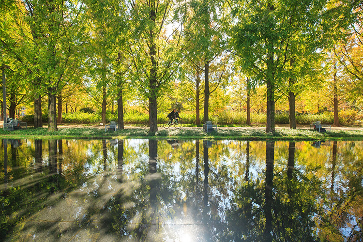
 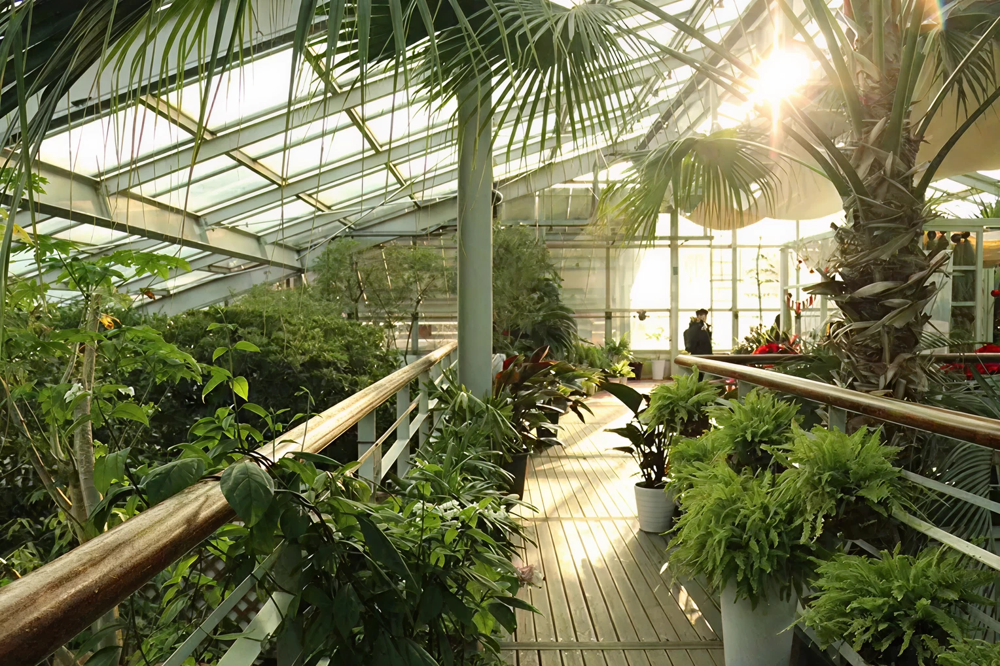
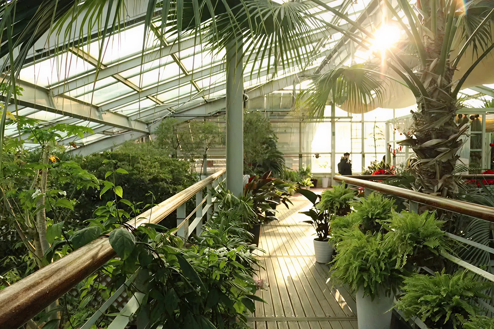

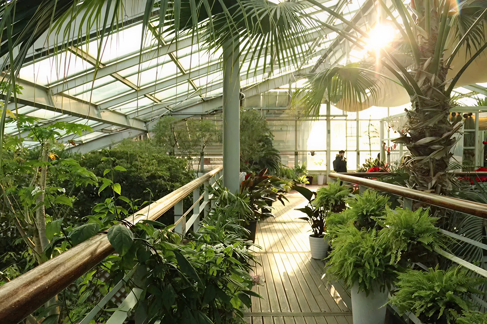
-
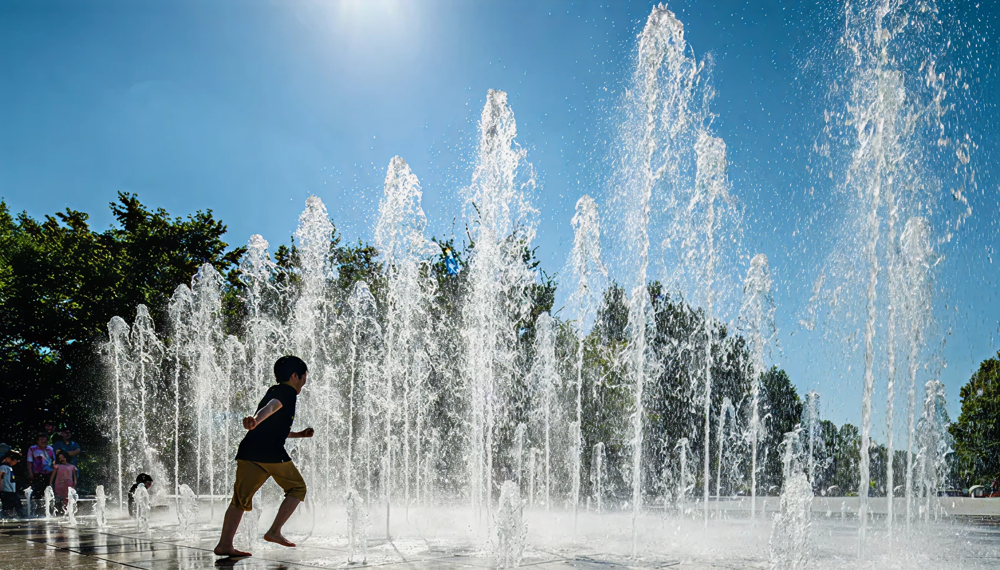01 바닥분수100개의 노즐에서 다양한 높이와 형태로 연출되는
경쾌한 물줄기가
바닥에서 힘차게 솟아올라 색다른 물놀이를 제공
바닥분수에서는 안전을 위해 이용수칙을 꼭 지켜주세요. -
02 겨울연못수심 3cm의 얕은 연못이 주변의 아름다운 경관을
한 폭의 그림처럼 담아냄
보는 위치에 따라 다양한 경관이 연출되어 보는 즐거움이
더욱 크며,
메타세쿼이아가 투영된 멋진 경관을 담으려는 사람들로
늘 북적이는
서울숲의 유명한 포토 스팟 중 하나임. -
 03 군마상서울숲이 만들어지기 전, 이곳이 경마장으로 쓰인것을 기념해 제작
03 군마상서울숲이 만들어지기 전, 이곳이 경마장으로 쓰인것을 기념해 제작
서울숲에 들어서면 경마 장면을 역동적으로 표현한 조형물
스타트(START,출발) 이라는 제목을 가진 군마상은
새로운 도약을 상징. -
 04 야외무대탁 트인 공간에 조명을 설치하여 분지 형태의 야외모임 공간조성
04 야외무대탁 트인 공간에 조명을 설치하여 분지 형태의 야외모임 공간조성
소규모의 문화 행사등이 진행되는 공간 -
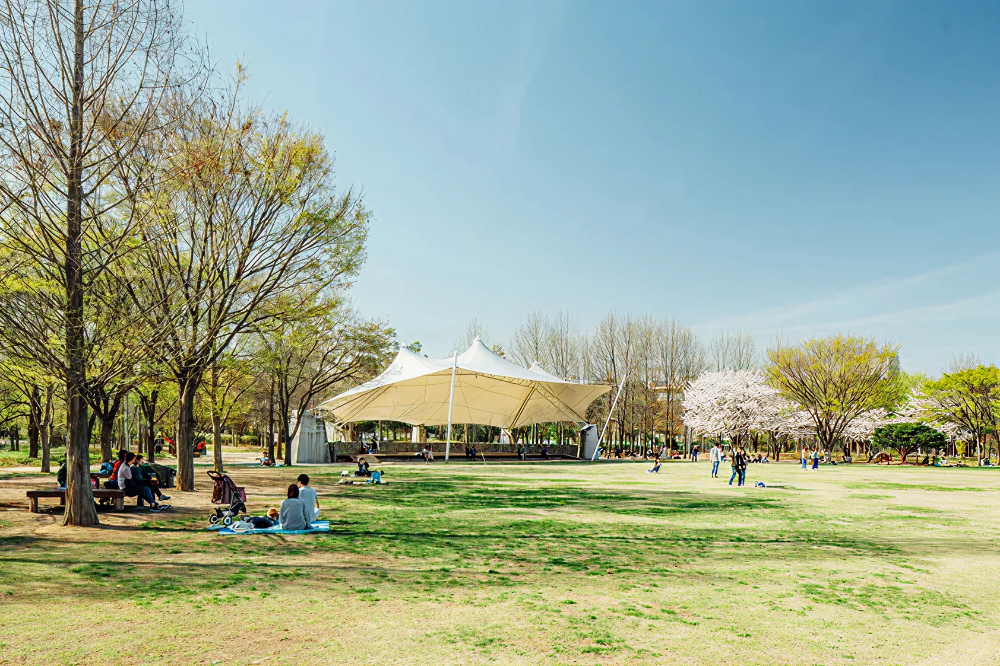05 가족마당무대서울숲에 들어서면 만나는 넓은 잔디밭
탁 트인 잔디밭에서 가족, 친구들과 소풍을 즐겨보세요
가족마당에서는 공연, 페스티벌 등 다양한 문화행사가 진행됨.
-
01 꽃사슴 방사장서울숲의 상징이기도 한 꽃사슴을 만날 수 있는 공간
꽃사슴 방사장이 있는 생태숲은 운영시간 내에 관람가능 -
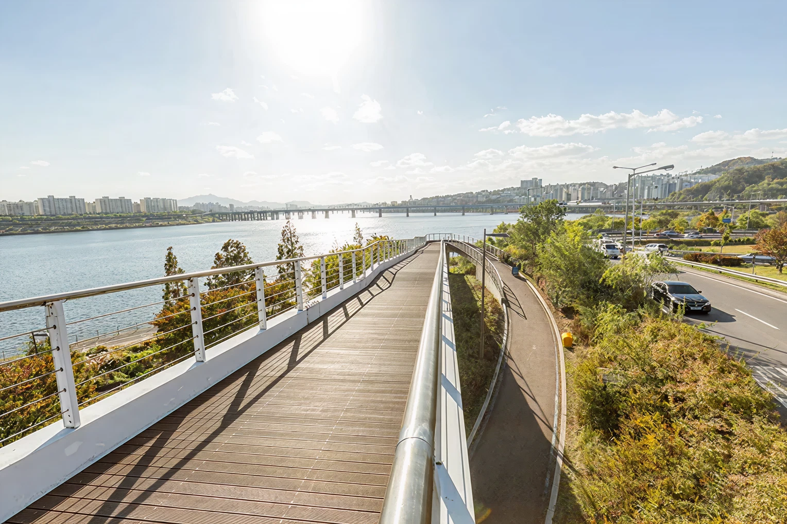02 보행가교서울숲의 공중을 가로질러 바람의 언덕에서 한강공원으로 이어짐
다리 위에서 생태숲을 내려다 볼 수 있어 전망대의 역할도 함 -
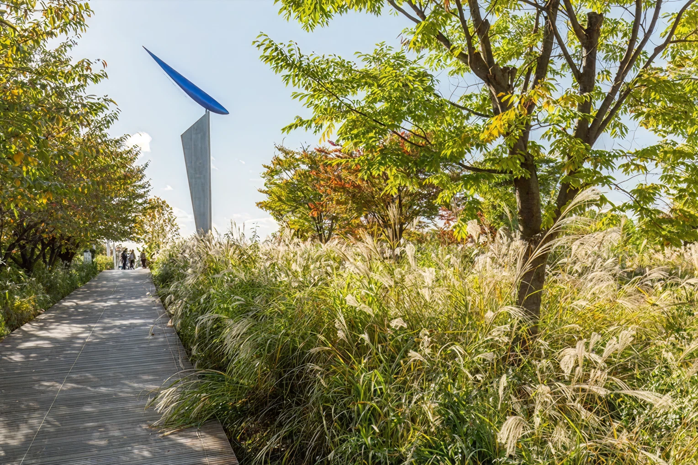03 바람의 언덕서울숲에서 가장 높은 장소
바람의 언덕에 오르면 한강에서 불어오는 시원한 바람을 느끼며
물결치는
억새밭을 감상할 수 있음.
-
01 곤충식물원예전 정수장의 급속여과지 건물을 활용해 만든 온실
평소에는
보기 어려운 100여종의 열대 식물과 곤충, 파충류, 양서류 등을
관람할 수 있음.
여름엔 시원하고, 겨울엔 따뜻해 사시사철 인기가 많은 공간임
-
01 구근정원숲속 튤립길을 테마로 한 가로형 정원
- - 위치 : 군마상~ 겨울연못 옆 ~ 물놀이터
- - 면적 : 4,000㎡
- - 수종 : 튤립, 수선화 등 60,000본
-
 02 갤러리 정원옛 정수장 침전조의 구조물을 그대로 활용하여, 형형색색의 아름다운 꽃과
02 갤러리 정원옛 정수장 침전조의 구조물을 그대로 활용하여, 형형색색의 아름다운 꽃과
덩굴식물이 어우러진 정원- - 위치 : 서울숲 나비정원 앞
- - 규모 : 1,600㎡
- - 조성연도 : 2005년도(최초 조성)
-
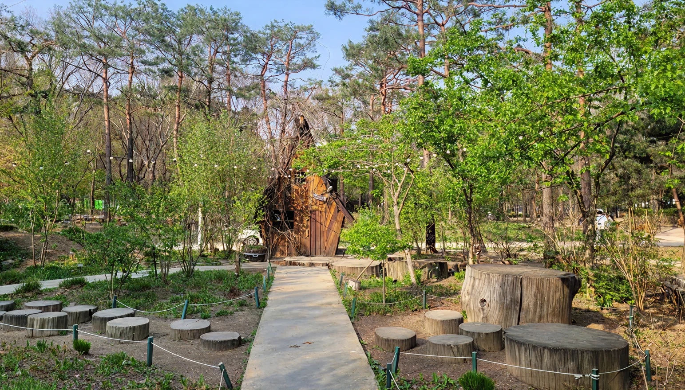03 어린이 정원(엄마의 정원)엄마가 읽어주는 동화를 테마로 한 정원
- - 위치 : 가족마당 뒤
- - 규모 : 400㎡
- - 조성연도 : 2017년도
-
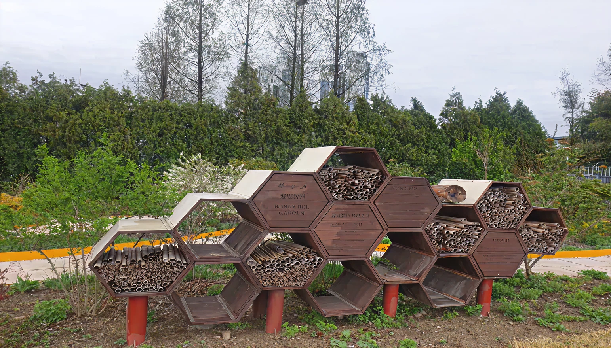04 꿀벌 정원꿀벌을 테마로 한 밀원식물정원
- - 위치 : 뚝도 아리수 정수센터 잔디밭
- - 규모 : 505.9㎡
- - 조성연도 : 2017년도
-
 05 도시락 정원친환경적인 도시락문화를 권장하는 피크닉 정원
05 도시락 정원친환경적인 도시락문화를 권장하는 피크닉 정원- - 위치 : 가족마당 살구나무 옆
- - 규모 : 1,000㎡
- - 조성년도 : 2018년도
-
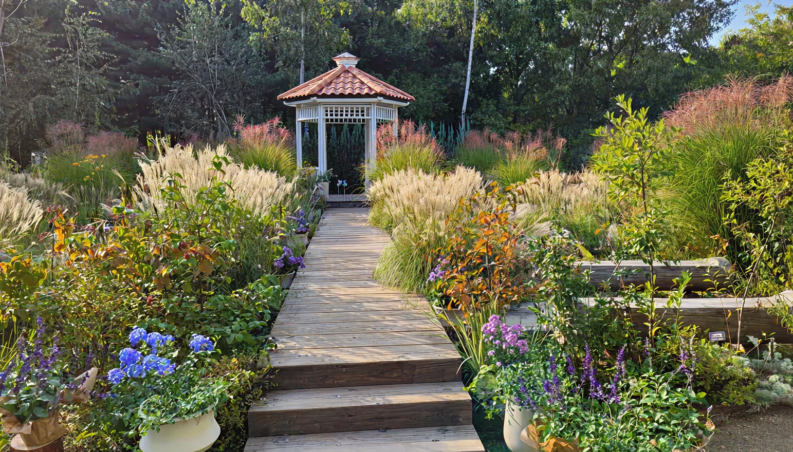05 설렘 정원미세먼지를 저감시키고 아늑함을 주는 다층의 숲, 행복이 담긴 열매의 정원 · 외주
- - 위치 : 원형마당
- - 규모 : 371㎡
- - 조성연도 : 2019년
-
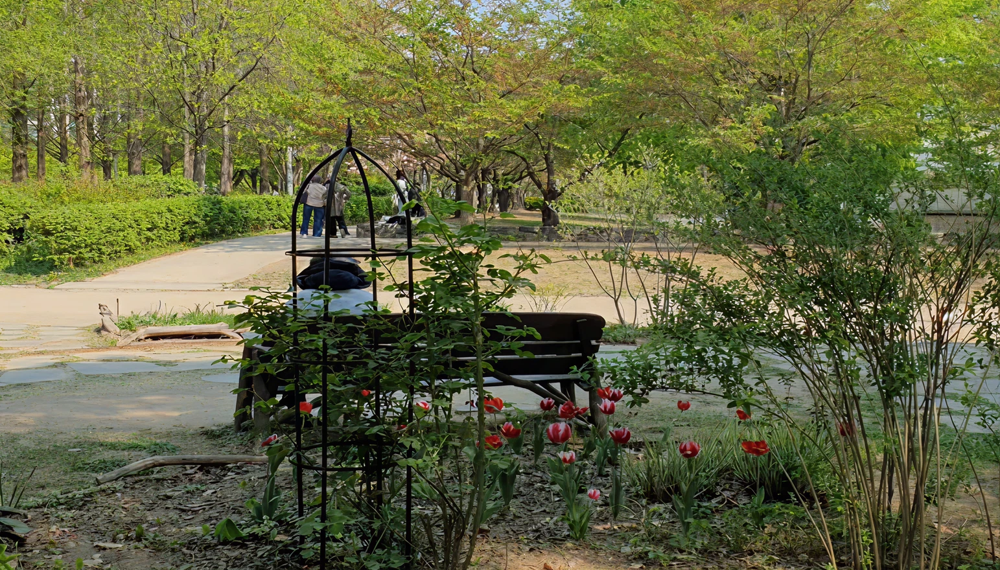07 벤치 가든 1호연중 다양한 종류의 꽃을 볼 수 있는 모퉁이 정원
- - 위치 : 야외무대-가족마당 사이 경계구간
- - 규모 : 150㎡
- - 조성연도 : 2019년도
-
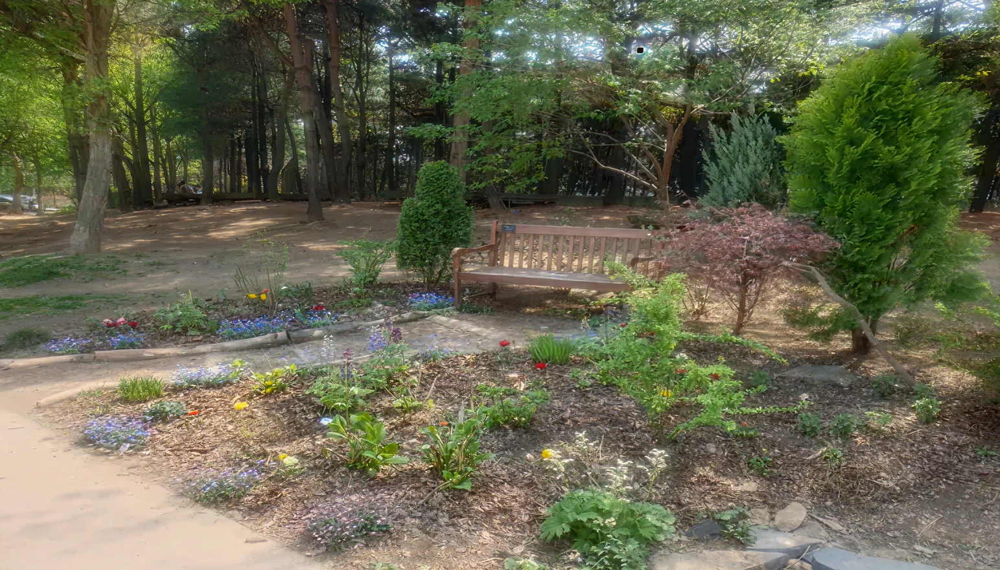08 벤치 가든 2호벤치를 중심으로 한 주변 경관 개선을 위한 미니가든
- - 위치 : 사과나무길 앞
- - 규모 : 40㎡(벤치1개)
- - 조성연도 : 2020년도
-
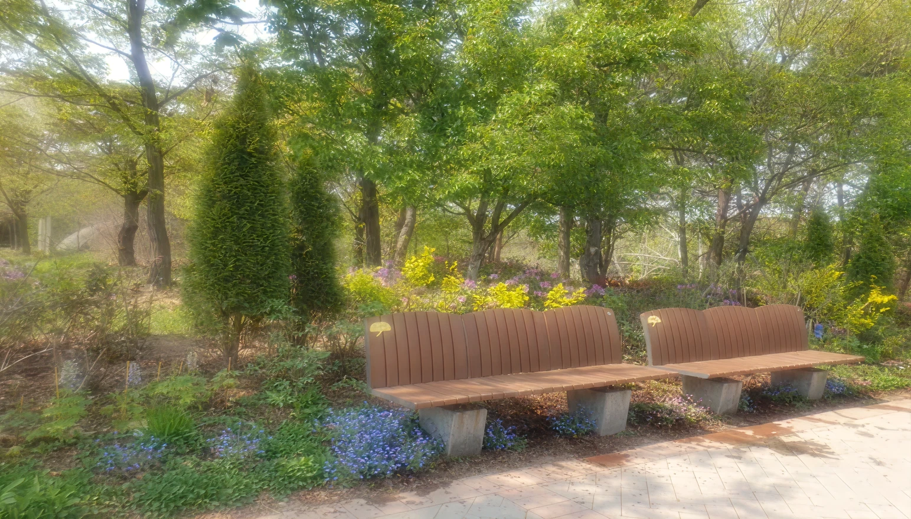09 벤치 가든 3호벤치를 중심으로 한 주변 경관 개선을 위한 미니가든 조성
- - 위치 : 무지개 언덕
- - 규모 : 30㎡(벤치 2개)
- - 조성연도 : 2020년도
-
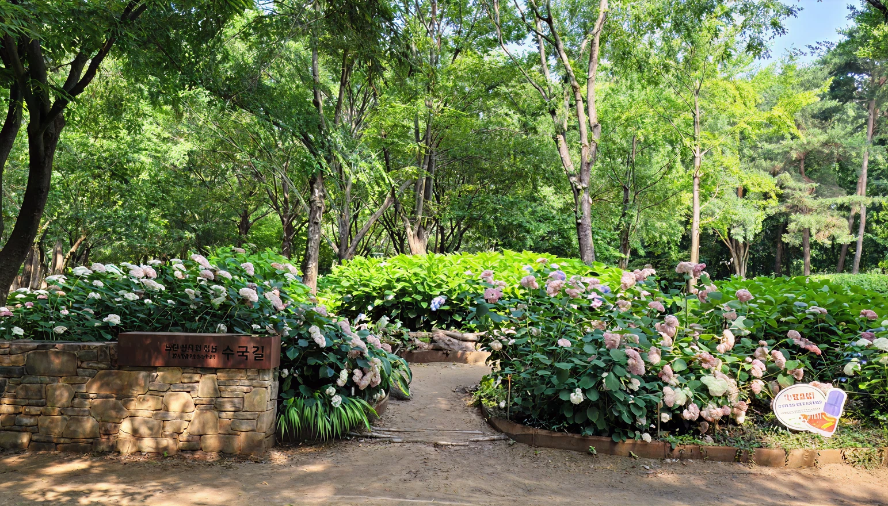10 느린산책의 정원, 수국길도시인의 바쁜 시간을 자연의 ‘느린 시간‘이 치유해 주길
바라는 마음의 정원- - 위치 : 5번 출입구와 어린이 정원 사이
- - 규모 : 300㎡
- - 조성연도 : 2020년도
-
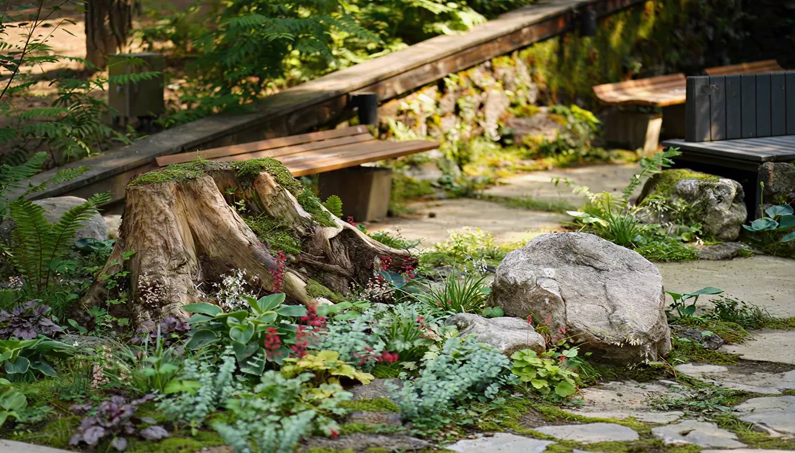11 겨울 정원추운 겨울에도 즐길 수 있는 다채로운 숲 정원
- - 위치 : 숲속빈터
- - 규모 : 800㎡
- - 조성연도 : 2020년도
-
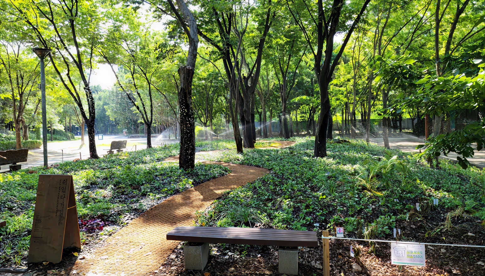12 쉬었다가 길 정원
- - 위치 : 체육공원
- - 규모 : 600㎡
- - 조성연도 : 2021년도
-
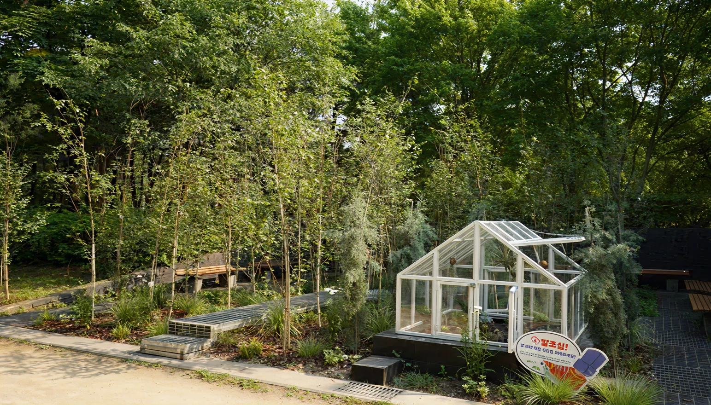13 겨울 정원 (Ⅱ)추운 겨울에도 즐길 수 있는 다채로운 숲 정원, 숲속빈터,
2개의 포켓형 녹지공간에
이끼정원, 자작나무 숲 속
미니온실정원 조성- - 위치 : 숲속 빈터
- - 규모 : 800㎡
- - 조성년도 : 2021년도
-
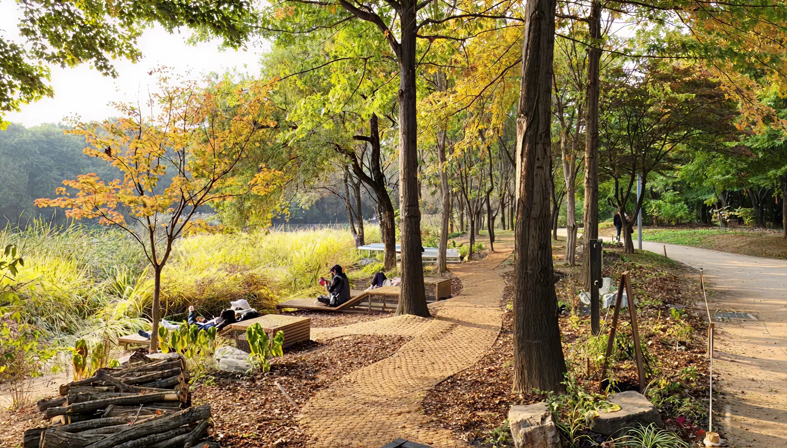14 중앙호수 친수공간 조성 (3멍가든)‘호숫가’라는 장소성을 반영하여 휴게공간이 특화된
새로운 형태의 산책로 조성,
교목 위주의 공간을 관목과 초화로
어우러진 다양한 식생의 공간으로 재생- - 위치 : 중앙호수 산책로
- - 규모 : 400㎡(산책로 55m)
- - 조성연도 : 2021년도
-
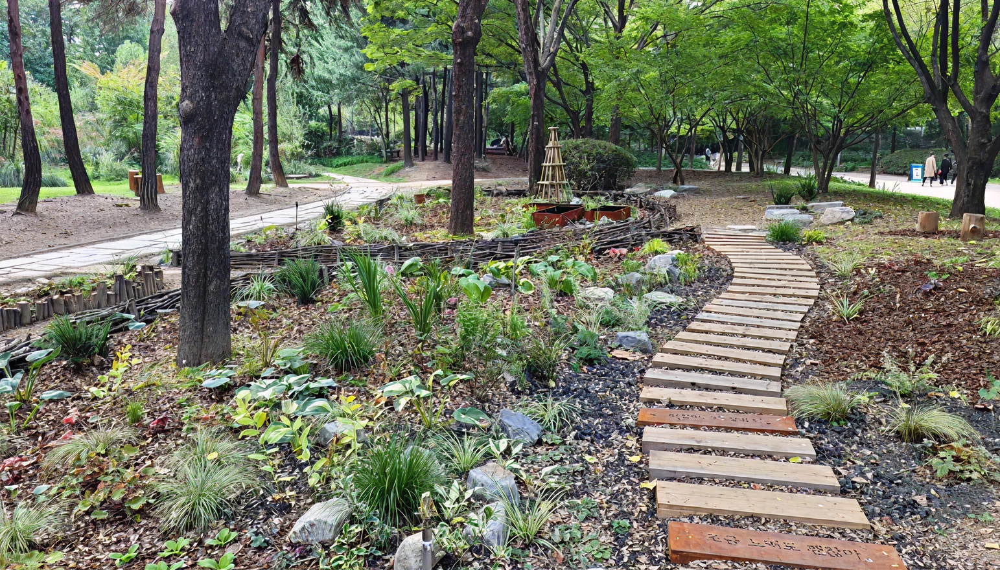15 포레스트 가든 (Forest garden)
- - 위치 : 수국정원 옆(연계)
- - 규모 : 400㎡
- - 조성년도 : 2021년도
-
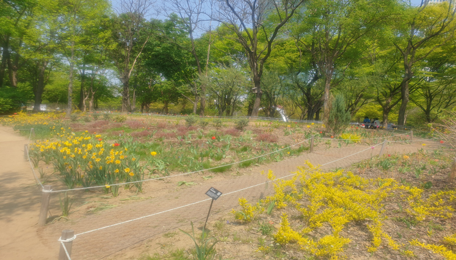16 중앙호수 윈터 가든중앙호수 주변 일년초 중심의 식재에서 벗어나
지속가능한 다년생 관목 중심으로
식재, 수피가 아름다운 관목과
겨울에도 푸른 상록성 교관목을 식재하여 겨울철
호수경관 개선- - 위치 : 중앙호수 산책로 주변
- - 규모 : 200㎡
- - 조성연도 : 2021년도